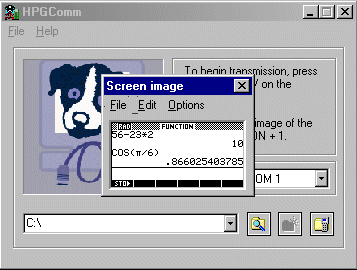

Capturing Calculator Screens

The ability to capture screens
and paste them into a word processor is extremely useful in preparing worksheets or
writing assignments.
Images can be modified in some ways using the Options
menu
, transferred to the clipboard using the Edit menu
, or saved in BMP format using the File menu .
There is no limit to the number of images that can be captured. When an
image is no longer required it can be discarded by clicking on the close tab
.
- Connect the calculator to the PC, and run the HPGComm
program. You do not need to be in an initialized directory to capture
calculator screens.
- On the calculator, access the screen that you want to
capture.
- On the calculator, hold down [On] and, while still
holding it down, press [1] and release both.
- An image of the calculator screen is sent to the PC
Connectivity Kit. It appears in a separate graphics window.
- Use the Options menu to modify the image if
desired, the File menu to save the image if desired, or
the Edit
menu to transfer it to the clipboard in order
to paste it into another application such as a word processor.